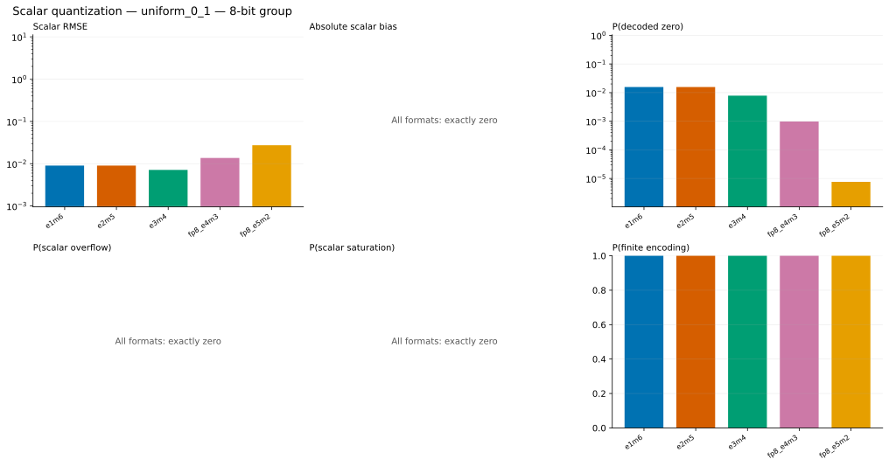
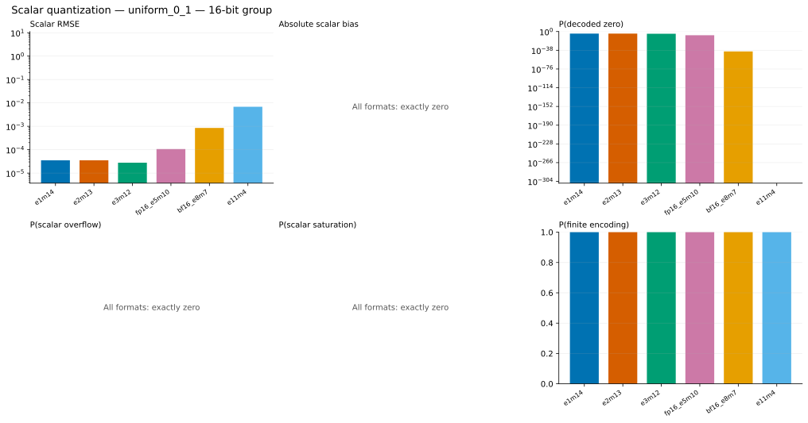
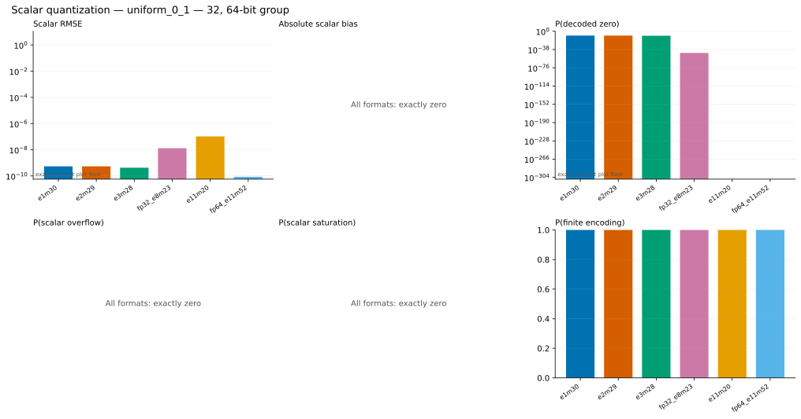
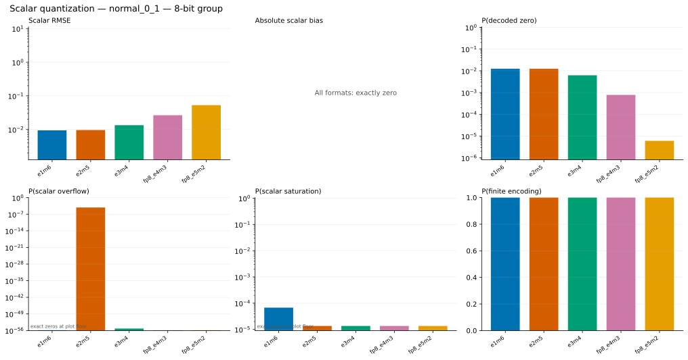
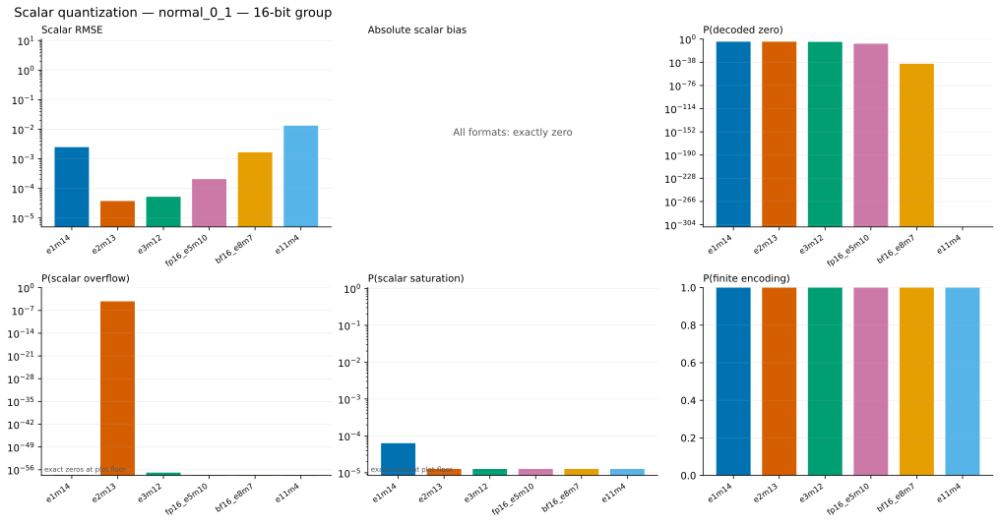
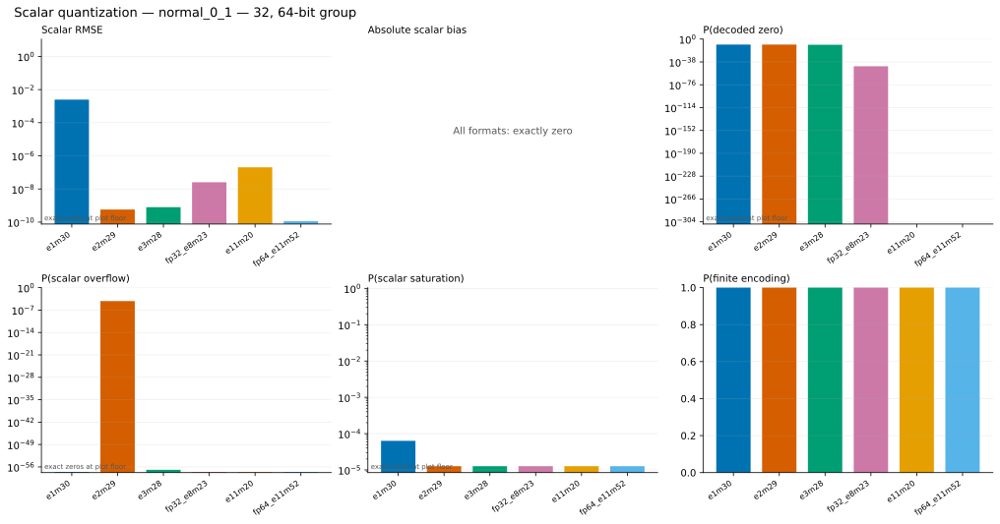
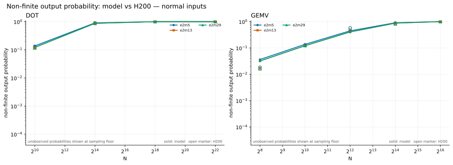
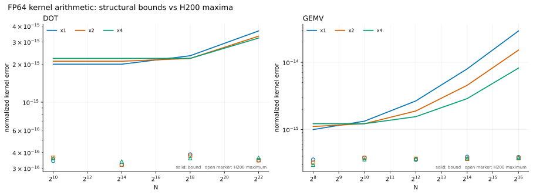

Scalar and arithmetic accuracy
Scalar quantization behavior, non-finite outputs, and FP64 accumulation error are kept separate.
Scalar quantization under U(0,1)
These analytical curves isolate one-value quantization before any kernel reduction.
8-bit

16-bit

32/64-bit

Scalar quantization under N(0,1)
Zero, overflow, and saturation probabilities explain several kernel-level failure cases.
8-bit

16-bit

32/64-bit

Non-finite outputs
This compares predicted and measured probabilities that a DOT or GEMV output becomes non-finite.

FP64 kernel arithmetic
This isolates rounding introduced by x1/x2/x4 kernel evaluation after storage values have already been decoded.
